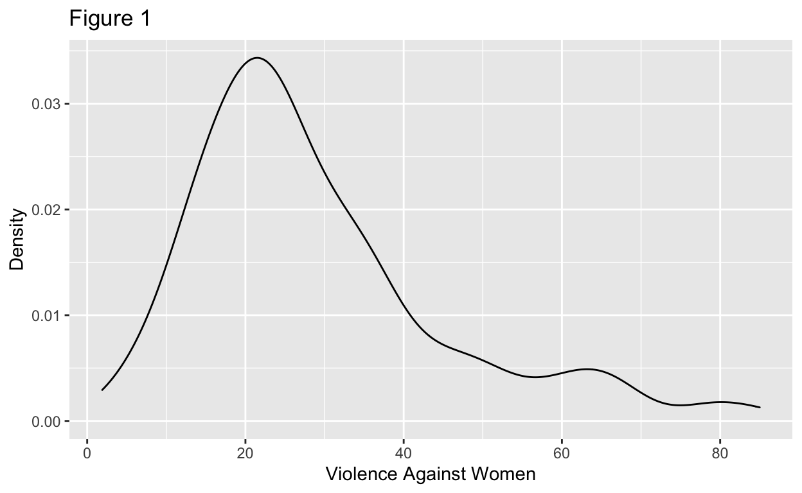
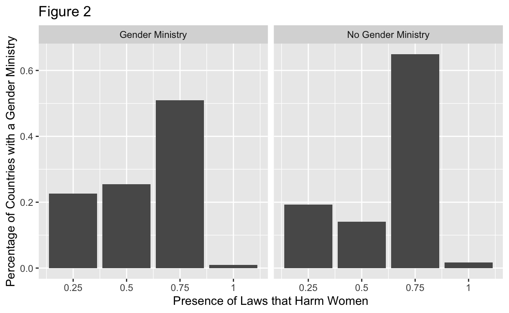
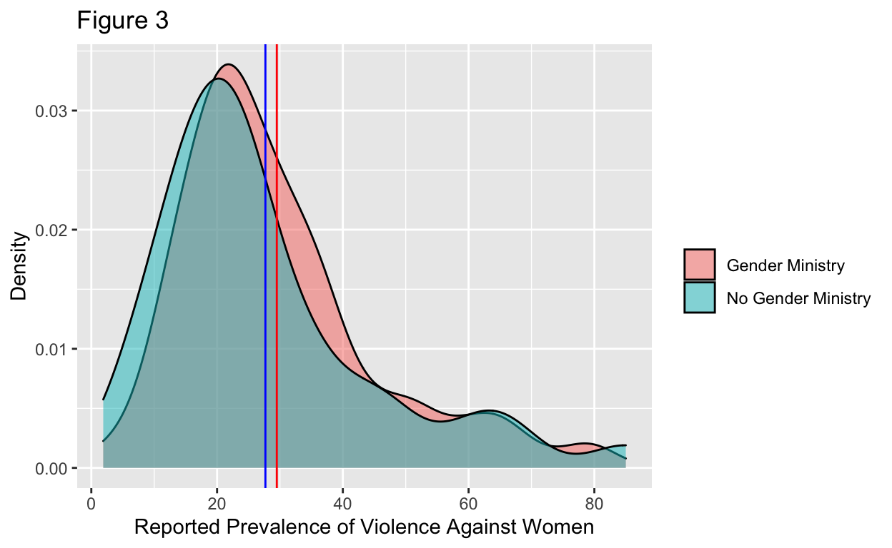

Hanna Johnson’s final project for Gov50 on the relationship between countries with gender ministries and violence against women
I am interested in exploring whether the existence of an office dedicated to the advancement of women’s rights within the government is correlated with a lower percentage of violence against women. For this study, I examined agencies that are Cabinet-level or other equivalencies, and will refer to these as “gender ministries,” which broadly encompasses multiple options, including gender ministries, equality ministries, and family ministries, among others. I will also be using country’s self-reported rates of violence against women as well as a legal data analysis of their laws on whether they harm women. These results could provide helpful metrics for several important questions, including the general effectiveness of such offices and positions. More specifically, it could demonstrate whether there are good mechanisms for reporting within the government, if there are laws that protect women that may have resulted from the existence of such offices, and if they have reduced gender discrimination, measured either through less violence, or less stigmatizing beliefs about women. However, due to the nature of this question, it may be difficult to parse through these possibilities. I affirm that this is still an essential topic for research, despite these difficulties, and if gender ministries are associated with a reduced outcome of violence against women, this makes an important case for their existence in other countries, too.
I hypothesize that the existence of gender ministries does reduce violence against women and predict that statistics will be lower in countries with these departments, especially if the leader of this department is a woman, as it is well-established that when someone takes office, they are more likely to advocate for the interests of their own group. In other words, a woman in office, especially a gender-focused office, the office is likely to accomplish something tangible due to the impacts of representation, exposure, and substantive representation. However, I also acknowledge that the statistics could also be higher, due to an increased accessibility and greater feeling of safety to report violence against women when it occurs. Patterns that would support my hypothesis are if countries with gender ministries reliably had lower rates of violence against women. Patterns that would not support my hypothesis could include if there appeared to be no statistically significant relationship, or if numbers were significantly higher, although that could also be due to an increased number of reports due to more trust in the system and more protection, not necessarily a higher rate of violence.
I began collecting data by locating the Violence Against Women dataset from the Organisation for Economic Co-operation and Development (OECD) to gather data on 163 countries on their lifetime prevalence of violence against women as well as whether they have laws that actively harm women. Prevalence of violence against women is measured by a percent between 0 and 100, with 0 being no violence and 100 being total violence and is reported by the government. Laws that actively harm women are measured between 0 and 1, with 0 indicating no existing laws that actively harm women, and 1 indicating the presence of laws that clearly harm women and is based on the country’s current laws. Most countries fall somewhere in between the extremes on most counts in either 0.25, 0.5, or 0.75. I used rates of violence against women as the dependent variable and physically controlled for the presence of laws that actively harm women, as I believed that could have otherwise influenced my results. The data source only provided data for 2019, so I will not be conducting any sort of time review in this project.
Next, to establish whether a country has a gender ministry, I manually searched for details on 163 countries to align with the data from the OECD data source. I individually looked up each country reported in the OECD data, found either governmental websites or news sources reporting the creation of a new department, or utilized some UN reports on the subject too, to present an updated registry. I measured between 0 and 1, with 0 indicating no gender ministry whatsoever and 1 indicating some sort of gender ministry. There were no numbers in between these extremes, as I combined any sort of gender ministry as a positive number. In future research, I may consider splitting it further, to distinguish between equality ministries, family ministries, and others. However, for the purposes of this study, I was unsure how to categorize them in terms of effectiveness, and since all ministries included focus on gender to some high degree, I chose to categorize them as the same. Additionally, there are so many different names for the ministries, but they perform very similar roles, and I was not sure how to conduct an unbiased review of these. Thus, the presence (or lack thereof) of a gender ministry was my independent variable.
Finally, my research design is cross-sectional, since I will be using reported rates of violence against women and an analysis of existing laws from one point in time. Additionally, I did not interfere, but rather observed the existing data without any manipulation to deduce if there was any correlation between the existence of gender ministries and the rates of violence against women, when physically controlling for the country’s laws and whether they specifically harm women. Figure 1 summarizes the dependent variable.
The data that I referenced can be found here https://data.oecd.org/inequality/violence-against-women.htm


Figure 2 demonstrates that for countries with a gender ministry, there are fewer countries with harmful laws about violence against women, where the most harmful laws are 1 and the least harmful laws are 0. It is notable that gender ministry is an expansive category here, including countries with a distinct Ministry of Gender, but also countries with a combined ministry, such as Ministry of Family and Gender, or Ministry of Social Issues with gender as a primary focus. Countries without a gender ministry are countries that lack all these ministry options. Thus, in each category of laws, in categories which mean more harmful laws, including 1 and 0.75 are more highly represented in the countries without a gender ministry or an office tangential to a gender ministry. For countries with fewer harmful laws, including 0.5 and 0.25, countries with a gender ministry or an office adjacent to it are more highly represented.

Figure 3 was my first attempt at trying to answer my research question on whether having a Ministry of Gender is correlated with better outcomes for women, particularly on violence against women. This visualization demonstrates that the rates of violence against women is similar for countries with and without a Gender Ministry, with higher reported rates of violence for countries with a Gender Ministry, although in this visualization, it is unclear whether this is a statistically significant difference. The prevalence is measured in a percent of women who both experience and report violence against women, ranging from 0 to 100, although no countries reported a rate of 100. However, it is notable to mention that over 30 countries in the dataset did not submit reports of violence against women, many of which are countries that do not have a gender ministry. Thus, these results could be skewed by the fact that many countries, including those without a Gender Ministry, did not submit and may have interfered with the data. Moreover, this also relies on reported violence against women, which is infamously extremely under-reported, so it is possible that higher reported prevalence of violence against women could be a good thing, since it could mean that women felt safe enough to report violence, which could have been facilitated by the presence of a Gender Ministry.
Call:
lm(formula = PREVVIOLLIFETIME ~ Gender_Ministry_Presence + LAWDOMVIOL,
data = prevalence_and_laws_3)
Residuals:
Min 1Q Median 3Q Max
-24.785 -10.259 -3.685 6.333 57.946
Coefficients:
Estimate Std. Error t value Pr(>|t|)
(Intercept) 22.680 4.710 4.816 4.13e-06 ***
Gender_Ministry_Presence 1.818 3.156 0.576 0.566
LAWDOMVIOL 8.747 6.801 1.286 0.201
---
Signif. codes: 0 '***' 0.001 '**' 0.01 '*' 0.05 '.' 0.1 ' ' 1
Residual standard error: 16.34 on 126 degrees of freedom
Multiple R-squared: 0.01549, Adjusted R-squared: -0.0001333
F-statistic: 0.9915 on 2 and 126 DF, p-value: 0.3739| Model 1 | |
|---|---|
| (Intercept) | 22.680 |
| s.e. = 4.710 | |
| p = <0.001 | |
| Gender_Ministry_Presence | 1.818 |
| s.e. = 3.156 | |
| p = 0.566 | |
| LAWDOMVIOL | 8.747 |
| s.e. = 6.801 | |
| p = 0.201 | |
| Num.Obs. | 129 |
| R2 | 0.015 |
| R2 Adj. | −0.0001 |
\[ \operatorname{PREVVIOLLIFETIME} = \alpha + \beta_{1}(\operatorname{Gender\_Ministry\_Presence}) + \beta_{2}(\operatorname{LAWDOMVIOL}) + \epsilon \] \[ \operatorname{\widehat{PREVVIOLLIFETIME}} = 22.68 + 1.82(\operatorname{Gender\_Ministry\_Presence}) + 8.75(\operatorname{LAWDOMVIOL}) \]
The results of the regression on my main coefficient, Gender_Ministry_Presence, demonstrate that the effects (rates of violence against women in percentages) observed are slightly higher for countries with gender ministries, but this is not a statistically significant result. This regression equation demonstrates that there is a 22.680% average violence against women rate when there is no gender ministry and no laws that harm women. It also demonstrates that there is a 1.818% increase in violence against women when the gender ministry variable increases by a value of 1, indicating the presence of a gender ministry, when holding the laws measure fixed. Finally, it demonstrates that there is an 8.747% increase in violence against women when the laws variable increases by a value of 1, indicating the presence of laws that actively harm women, when holding gender ministry fixed. This shows that any observed effects in increases in violence against women may not be due to a lack of gender ministry, but instead to a presence of laws that actively harm women. Although, this difference was not statistically significant either. However, as mentioned earlier, this could be because gender ministries cause an increase in reported rates of violence through better and safer reporting mechanisms, even if the violence itself does not increase. Unfortunately, is no clear way to distinguish this in the data.
Thus, there is no causal effect reported in these from this specific data and these specific variables, including violence against women, presence of a gender ministry, and presence of laws that actively harm women. However, I believe that there could still be a correlation, but that factors within the data complicate the results, including which countries reported their rates of violence against women and which did not, but I will discuss this in detail in the next section.
Within this project, I did not find support for my hypothesis. Rates of violence were slightly higher for countries with a gender ministry, although this was not statistically significant. The only measured relationship with a strong statistical significance was with the intercept, which is not as usable since it relies on gender ministry being 0. However, even though I did not find support for my hypothesis, I still believe it to be true. This project was severely limited by constraints of the data, which included only 163 reported countries, in comparison to the 193 that are typically considered to be the gold standard of country research, since those are the nations represented in the United Nations. Moreover, while each country had a measure of which laws were reported since that was based on the laws in their nation, violence against women is not as clearly documented in all countries. Unfortunately, countries that either scored high on laws which discriminated against women and/or did not have a gender ministry tended to be the states that did not have recorded measures. Thus, the only countries that did submit rates could have been states with more transparent systems. On a similar note, countries with a gender ministry or higher rates of gender equality still have violence against women, as it is a problem in every nation, but may have a better reporting system which empowers women to report and makes them feel safer when they do, which could result in higher reported rates of violence, even if violence overall may be lower. Generally, violence against women is extremely underreported, and this is likely worse in countries where women are less safe.
Additionally, in the future, I would want to improve my data by breaking down the gender ministry variable and creating an objective spectrum, with no gender ministry as 0, an actual gender ministry as 1, and a family, children, equality, or other similar ministry as 0.5 or 0.75. Other factors, including GDP of a country, could be included to control for the role of funding, which certainly impacts how successful a gender ministry can be, if it exists in that state. If possible, I would also want to find the amount that the ministry is funded with, including both the currency amount and what percent of the GDP that was, to provide essential context on both the amount and what the amount is compared to, to show how much of a priority it is, how established it might be, and what is considered a reasonable amount to distribute on a country-by-country basis. The ability to see who invests the most, both comparatively to other countries and contextually to their own GDP, could provide valuable insight. It might also be helpful to add whether the head of the gender ministry was a woman, which could impact the success of the ministry too. Finally, I would like to find a more reliable method of data collection, specifically a data source which would measure my variables of interest (i.e. laws and violence against women) at multiple points in time, which I could then use to incorporate time as a factor for the gender ministries, including when they were founded, which is a really important area that I was unable to incorporate, due to a lack of multiple years reported from the OECD.
https://github.com/hannajohnson11/gov50-final-project